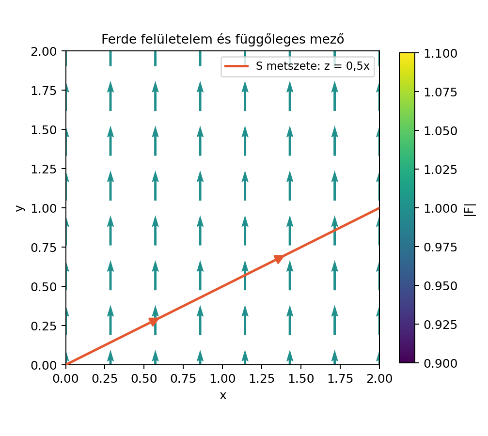

Képzeljük el, hogy egy vékony fémhálón víz áramlik át. A fizikai
kérdés gyakran nem az, hogy mekkora a sebesség nagysága, hanem
az, hogy mennyi víz halad át a hálón másodpercenként. Ha a
hálót az áramlásra merőlegesen tartjuk, sok víz folyik át rajta; ha
szinte az áramlással párhuzamosan fordítjuk, alig. A felületi integrál
(surface integral) és a fluxus (flux) éppen ezt a jelenséget méri
matematikailag: egy felületen szétterülő skaláris mennyiséget
(például tömeget, töltést), illetve egy vektormező felületen
átmenő, irányított összegét.
Míg a Paraméteres felületek és felszín
alfejezetben a felület nagyságát, azaz a
integrált tanuljuk, most két új fogalmat építünk rá:
ha egy skalármező van a felületen (sűrűség,
hőmérséklet, anyagvastagság), akkor a
tömegszerű összeget ad;
ha egy vektormező van jelen (sebesség, hőáram,
elektromos tér), akkor a
fluxus azt adja meg, mennyi „folyik át” a felületen
irányítással.
29.2.2 Szemléletes kép
Tekintsünk egy
egyenes mentén vett függőleges metszetet; a teljes felület ennek y
irányú kiterjesztése. A függőleges
mező nyilai a felületre eső metszeten áthaladnak. A fluxus a mezőnek a
felületre merőleges komponensét összegzi: ha a felület ferde, a mező
csak a normális irányú része számít.

Ferde felületelem és függőleges mező - A
kék görbe a felület z = 0,5x metszete; a nyilak a konstans, függőleges F
= (0,1) mezőt mutatják. A fluxus a mező normálirányú komponenséből
adódik; párhuzamos felületnél nulla lenne.
A fenti ábra a kulcsot mutatja: nem a mező hosszát, hanem a felületre
merőleges vetületét keressük. Képzeletben a felületet parányi, sík
darabokra vágjuk; minden darabon a mezőt a darab normálvektorával
szorozzuk, majd összegzünk.
29.2.3 Definíciók
Legyen
szakaszonként sima, paraméterezett felület:
ahol
elemi tartomány, és feltesszük, hogy
a szóban forgó pontokban. A
és
parciális deriváltvektorok az érintősíkban fekszenek, ezért
a felület egy normálvektora,
pedig az
-paraméterváltozásból
és a
-paraméterváltozásból
adódó kis darab területi nagyítási tényezője. Az elemi
felszíndarab:
Definíció (skalármező felületi integrálja). Ha
folytonos, akkor az
felületi integrálja az
felületen:
A
elem nem függ az irányítástól, hiszen abszolút érték van benne. Ezért a
skalármező felületi integrálja irányítás nélküli
mennyiség: ha a paraméterezést megfordítjuk, az érték nem változik.
Definíció (vektormező fluxusa). Legyen
irányított felület
egységnormálissal, és legyen
folytonos vektormező az
-et
tartalmazó nyílt halmazon. Az
fluxusa az
-en:
Paraméterezésben, ha
irányítása az
-nel
egyezik, akkor
és így
Ha a paraméterezés az
-nel
éppen ellentétes irányítású, akkor a jobb oldal előjelet vált.
Az
jelölésben a
vektoros felületelem szerepel. A fluxus tehát
előjeles mennyiség: a mezőnek az irányított normálissal
vett skaláris szorzatát integráljuk. Ha a mező éppen az
-nel
egy irányba mutat, a fluxus pozitív; ha ellentétes irányba, negatív; ha
a mező a felület érintősíkjában fekszik, akkor nulla a
hozzájárulása.
Zárt felület (például gömb, hengerpalást, kocka) esetén
hagyományszerűen kifelé mutató normálist használunk,
hacsak a feladat mást nem ír.
29.2.4 A fluxusképlet
levezetése
A fluxusformula onnan származik, hogy a felületet kis
paramétercellákra bontjuk, és minden cellán a mezőt a cella
területvektorával szorozzuk.
Bizonyítási terv. Egy
cella képe a felületen görbült kis négyszög. A kalkulus linearizálásos
gondolata szerint a cella két oldalát a
vektorok közelítik. A felületelemet a két oldalvektor vektoriális
szorzata adja:
Ennek a vektornak az iránya a felület normálisa, nagysága pedig a
közelítő terület. A fluxus a kis darabokon a mezőnormális komponensének
összege:
A felosztást finomítva a jobb oldal Riemann-összeg, határértéke éppen
a (1)-ben szereplő kettős integrál. ∎
29.2.5 Számolási recept: felületi
integrál és fluxus
Paraméterezzük a felületet:
.
Kiszámoljuk
-t
és
-t,
majd a keresztszorzatot
-t.
Skalármező integráljához vesszük a keresztszorzat
nagyságát:
Fluxushoz választunk irányítást. Ha a paraméterezés
irányítása megfelel az
-nek,
akkor
Ha a paraméterezés ellentétes, a jobb oldalt
-gyel
szorozzuk.
Átírjuk a kettős integrált a
tartományrajz alapján, gyakran polárkoordinátákkal vagy
normáltartományon iterált integrállal.
Ellenőrzés: mértékegységet nézünk, határesetet
számolunk, és meggyőződünk arról, hogy a normális előjele a fizikai
iránnyal egyezik.
29.2.6 Kidolgozott példa skalármező
felületi integráljára
1. példa. Legyen
az egységgömbhéj, azaz
,
és legyen
.
Számítsuk ki a
integrált.
Megoldás. A gömböt a
paraméterezéssel írjuk le,
a
tengellyel bezárt szög,
az azimut. A Paraméteres felületek és felszín
alfejezetből tudjuk (vagy közvetlen deriválással kapjuk), hogy
és ennek nagysága:
(
miatt
).
Mivel
,
ezért
A belső integrálban
helyettesítéssel
,
és
A külső
-integrál
-t
ad, így
Ellenőrzés. Az egységgömb felszíne
.
A
átlaga a gömbfelületen
,
ugyanis a gömbfelület szimmetriái miatt az
,
,
függvények átlaga egyenlő, és összegük minden pontban
.
Így az integrál
,
ami egyezik a számításunkkal.
29.2.7 Kidolgozott példa fluxusra:
grafikonfelület
2. példa. Legyen
a
grafikonfelület, felfelé irányítva. Számítsuk ki az
vektormező fluxusát.
Megoldás. A grafikon paraméterezése:
A parciális deriváltak:
Keresztszorzat:
Ennek a vektornak a
-komponense
pozitív, tehát felfelé mutat; a választott irányítás helyes. A mező a
grafikonon:
A pontszorzat:
A vetület a
körlap. Polárkoordinátákkal:
A belső integrál:
A külső integrál
-t
ad, tehát a fluxus:
Ellenőrzés. A
-komponensből
származó rész, az
,
a vetület területe, ami
.
Az
-
és
-komponensből
származó rész szintén
;
az összeg
,
ami valóban nagyobb a felület vetületi területénél, mert a ferde felület
„több” mezőt fog fel a nem merőleges komponensek miatt is.
29.2.8 A nevezetes
mező fluxusa gömbön
3. példa (továbbvitt eredmény). Legyen
ahol
,
legyen
az origó középpontú,
sugarú gömbfelület, és irányítsuk kifelé.
Megoldás. Az
gömbön
.
A gömb minden pontjában a kifelé mutató
egységnormális:
Ugyanis az origóból a gömbpontba húzott helyvektor merőleges a
gömbre, és kifelé mutat; hossza éppen
.
Most a mező a gömbön:
A normális komponens:
A pontszorzat tehát konstans a gömbfelületen. Ezért
a fluxus:
A gömbfelszín:
Végeredményben:
Ez az érték független
-től.
Vegyük észre, hogy a mező nagysága
-tel
csökken, a felület viszont
-tel
nő, ezért a kettő hatása kiejti egymást.
Ugyanezt közvetlen paraméterezéssel is megkaphatjuk: a
fenti paraméterezést használva
és így
Integrálva:
Ha a felületet befelé irányítanánk, az eredmény
lenne.
Figyelem. Ez a példa nem véletlen: ez a ponttöltés,
a gravitációs tömeg vagy a fénysugárzás törvényének inverz négyzetes
szerkezetét hordozza. Később a A
Gauss–Osztrogradszkij-tétel (divergenciatétel) alfejezetben ugyanez
a fluxus jelenik meg, és ott a tágabb értelemben vett forrásokkal
kapcsoljuk össze.
29.2.9 Valós életbeli
alkalmazás
29.2.9.1 Hőáram egy fal
felületén
Fourier hővezetési modellje szerint a hőáramsűrűség-vektor:
ahol
a hőmérséklet (K),
a hővezetési tényező (W/(m·K)). A negatív előjelnek az az értelme, hogy
a hő a melegebb helyről a hidegebb felé áramlik, tehát
a hőmérséklet-csökkenés irányába mutat.
Tekintsünk egy
vastag téglafalat, amelynek belső oldala
,
külső oldala
.
Legyen a falra merőleges koordináta
méterben,
a belső,
a külső oldal. Egydimenziós modellben a hőmérséklet:
Itt a hőmérséklet-különbség
,
a falvastagság
,
ezért a hőmérséklet gradiensének
-irányú
komponense
.
Legyen a hővezetési tényező
(kerekített, szemléltető modellérték; forrással nem ellenőrzött
anyagjellemző). Ekkor
A külső falfelület legyen
,
a
sík felfelé, vagyis a falból kifelé irányítva. A
területű falon a hőfluxus:
Mivel
és
konstans és párhuzamos, a felületi integrál egyszerű szorzat:
A pozitív előjel fizikailag azt jelenti, hogy a hő a fal külső
oldalán kifelé távozik, mégpedig
energia másodpercenként. Egy nap alatt ez
Így a felületi fluxus nem csupán matematikai fogalom, hanem közvetlen
mérnöki számítás: a fal hővesztesége. A modell korlátai: a hőmérsékletet
időben állandónak és a fal belső eloszlását lineárisnak feltételeztük; a
valóságban a bejövő és kimenő hőátadás, a rétegek és a sarkok módosítják
az eredményt. Az irányítás szerepe is lényeges: a belső oldalon a kifelé
mutató normál
,
ezért ott a fluxus megfelelő előjellel a falba belépő
hőt írja le.
29.2.9.2 Víz átfolyása hálón
Ha a víz sebességmezője
,
és egy
-es
háló normálvektora
-os
szöget zár be az
iránnyal, akkor a hálón áthaladó térfogatáram:
A
tényező ugyanaz, mint a felületi integrálbeli
:
minél jobban a felület normálisát állítjuk a mező irányába (azaz minél
merőlegesebb a háló az áramlásra), annál nagyobb a fluxus.
29.2.10 Tipikus hibák
A skalár felületi integrál és a fluxus
összekeverése.
A
nem irányított: a képletben
szerepel. A fluxusban viszont a vektoros
jelenik meg, irányítással. Ha valaki a fluxushoz is csak a
keresztszorzat nagyságát írja, elveszíti az előjelet és a normális
irányát.
Rossz normális irányítás zárt felületen.
Ha egy gömböt például a
és
felcserélésével paraméterezünk, előfordulhat, hogy
befelé mutat. A hibás kiinduló képlet így
-t
adhat a helyes
helyett. Zárt felületen mindig a kifelé mutató normálishoz igazítsuk a
paraméterezést, vagy kompenzáljunk előjellel.
A
nagyságának elhagyása.
Paraméteres felületen
általában. Például
hengerpalástnál
,
és az
tényező kihagyása rendszeres hiba.
Azt hinni, hogy a fluxus csak akkor nem nulla, ha a mező
merőleges a felületre.
Valójában csak a mező felületre merőleges (normális irányú) komponense
számít:
,
ahol
a mező és a normális szöge. Ha
,
a fluxus a merőleges esetnek
-szerese;
nulla csak akkor, ha a mező a felület érintősíkjában fekszik
().
29.2.11 Önellenőrzés
Igaz vagy hamis? Egy paraméterezett felületen a skalármező felületi
integráljához mindig a
nagyságát kell venni.
Milyen normálist használunk zárt felület fluxusának
kiszámításakor?
Legyen
a
vízszintes síklap a
korong fölött, felfelé irányítva, és
.
Mennyi a fluxus?
Ha egy felületet ellenkező irányba paraméterezünk, megváltozik-e a
skalármező felületi integrál?
Mennyi az
mező fluxusa egy origó középpontú,
sugarú gömbfelületen kifelé irányítva?
29.2.12 Önellenőrzés –
válaszok
Igaz. A skalármező felületi integráljában a
területelem
.
Kifelé mutató normálist.
A grafikon paraméterezése
,
így
,
tehát a fluxus
.
Nem. Az abszolút érték miatt a
elem irányítás nélküli.
,
független
-től.
29.2.13 Feladatok
1. feladat (A). Számítsa ki az
skalármező felületi integrálját az
síklapon, ahol
2. feladat (A). Legyen
a
síkban a
,
négyzet, felfelé irányítva. Számítsa ki az
mező fluxusát.
3. feladat (B). Legyen
a
,
paraboloiddarab, felfelé irányítva, és
.
Számítsa ki a fluxust. (Ellenőrizze az előjeleket.)
4. feladat (B). Számítsa ki az
mező fluxusát az
hengerpaláston, kifelé irányítva.
5. feladat (C). Mutassa meg, hogy az
vektormező origó középpontú,
sugarú gömbön vett kifelé irányított fluxusa
,
és független
-től.
Fogalmazza meg, milyen előjelű lenne az eredmény, ha a gömböt befelé
irányítanánk.
6. feladat (D). Egy folyóban a víz sebessége jó
közelítéssel
Egy
-es
háló normálisa
-os
szöget zár be az
-tengellyel.
Számítsa ki a hálón áthaladó térfogatáramot. Értelmezze az eredményt, és
mondja meg, mit adna a képlet, ha a háló párhuzamos lenne az
-tengellyel.
29.2.14 Megoldások
1. feladat. Paraméterezzük az
-et:
Ekkor
A belső integrál:
A külső:
2. feladat. A felület paraméterezése
.
Ekkor
,
és
A fluxus tehát
;
ennek mértékegysége a mező és a felület mértékegységétől függ.
3. feladat. A grafikon paraméterezése
,
így
A pontszorzat
.
Polárkoordinátákkal:
4. feladat. Paraméterezzük a hengert:
ami kifelé mutat. A mező a hengeren:
A pontszorzat:
Így a fluxus:
A
átlaga
-ben
,
ezért a
-integrál
;
a
-integrál
,
így az eredmény
.
5. feladat. A gömbön
.
A kifelé mutató egységnormális
.
A mező:
Így
Ez konstans, tehát:
Az eredmény független
-től.
Ha befelé irányítanánk, akkor a normálkomponens
lenne, tehát a fluxus
.
6. feladat. A térfogatáram a fluxus:
Behelyettesítve:
Az eredmény azt jelenti, hogy másodpercenként kb.
köbméter víz halad át a hálón. Ha a háló párhuzamos lenne az
-tengellyel,
a normálisa merőleges lenne az áramlásra, azaz
,
így a fluxus nulla volna.
29.2.15 Rövid összefoglaló
Ha
paraméterezett felület
-vel,
akkor a skalármező felületi integrálját a
képlet adja, ahol
a területelem. Vektormező fluxusa ennek irányított változata:
feltéve, hogy a paraméterezés az
egységnormálissal egyező irányítású. Zárt felületnél kifelé mutató
normálist használunk. A fluxus előjeles, és a mező normálirányú
komponensét méri, míg a skalár felületi integrál irányítás nélküli
mennyiség. A grafikonfelületre
esetén
.
Továbbvitt eredmények. A fluxus fogalmát a A Gauss–Osztrogradszkij-tétel (divergenciatétel)
alfejezet a kifelé irányított zárt felület fluxusaként használja, a A Stokes-tétel és a Maxwell-egyenletek alfejezet
pedig a rotáció felületi integráljaként kapcsolódik hozzá. A nevezetes
mező origó középpontú,
sugarú gömbön vett kifelé irányított fluxusa
,
független
-től;
ez a későbbi divergenciatételen alapuló forrásszemlélet egyik
kulcspéldája.
29.2.16 Források és ellenőrzési
hiányok
A fejezet a klasszikus többváltozós kalkulus és vektoranalízis
anyagára épül, különösen a standard felületi integrál- és
fluxus-definíciókra. A hővezetési példában használt
tégla-hővezetési tényező kerekített, szemléltető modellérték; nem
tekinthető ellenőrzött mérési adatnak. A webes hivatkozásokból nem
dolgoztam fel konkrét oldalméretű vagy verziószámú tananyagot; a
levezetések a kalkulus klasszikus, stabil eredményein alapulnak.